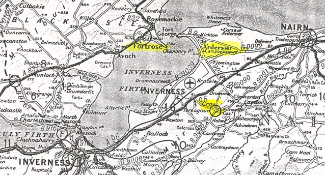
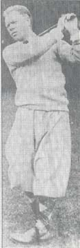

|
|
-Who
was the mother of his eldest son Thomas who predeceased him by two months?  Donald
Fraser came to Quebec
about 1817 and Mary McDonald about 1819. The
The
1818 Census of the R.C. Parish of Quebec
lists the following residing at 21 St Paul
st (Lowertown): On
15 Jan 1818 Donald Fraser gave his power of attorney to George Ross of Quebec
recording “my departure from this province.” On 1 May 1819 Donald Fraser of
Champlain st, merchant, was Bail and Surety for his brother William Fraser. William
Fraser married Isabella McDonald 23 April 1816 in Inverness, Scotland
and their first son John Donald was baptized there in 1817; he died in 1834 in Quebec. The other children were Donald
(1819), William (1821), Isabella (1823) and Duncan (1825).
Isabella
Fraser, aged 30 years, wife of William Fraser, butcher, was buried 25 March
1827. The St Andrew’s register
contains the entry: “William
Fraser, late of the City of Donald
Fraser was present at both burials. On
24 April 1828 he petitioned for an act of tutorship to the minor children of the
late William Fraser. John McBean,
uncle, was named tutor. Donald’s
sister Jane had married John McBean in The
Reverend James Harkness never identified Mary McDonald as the wife of Donald
Fraser in the baptism records of their children.
On 22 April 1839, a separation agreement or “Arrangement” was drawn
up between Donald Fraser, Merchant and Mary McDonald, Spinster, Mother of
several children of whom three were then living; Mary aged 7, Margaret aged 5,
Donald aged 10 months, providing an allowance for the care of said children. The
following is an account of the children by Mary McDonald: Daniel
[#1] - baptized 29 Nov 1824. Witnesses:
Donald Fraser, Father; Mary McDonald, Mother.
Daniel Fraser, aged ten months & ten days, was buried 8 Sept 1825.
Witness: Donald Fraser. John
[#1] - baptized 9 Dec 1825. Witnesses:
Donald Fraser; Mary McDonald. John
Fraser, aged eight months & twenty-three days, was buried 13 Aug 1826.
Witness: Donald Fraser. Isabella
- baptized 13 Aug 1827. Witnesses:
Donald Fraser, Father; Mary McDonald, Mother.
Isabella Fraser, aged seventeen months, was buried 11 Dec 1828.
Witness: Donald Fraser. William
- baptized 10 Aug 1830. Witness:
D. Fraser, Father; Mary McDonald, Mother.
William Clark Fraser, aged two years & sixty-nine days, was buried 10
Aug 1832. Maria
Clark - baptized 21 Aug 1832. Father
not present. Witness: Mary McDonald,
Mother. She married Alexander Watson
in Scotland 20 June 1850 and was living in Fortrose in 1871.
Of their 10 children, one was born in Cromarty, two in Inverness, three in
Glasgow / Govan, Lanarkshire and four in Rosemarkie, Ross-shire. Margaret
- baptized 10 Mar 1834. Margaret
Fraser married the Reverend Ferdinand Dunn in Daniel
[#2] - baptized 17 July 1838. Witness:
Mary McDonald. Daniel Fraser was
living in Glasgow
in 1871 but his death record has not been found. Mary
McDonald returned to The
following is an account of the children by Elizabeth Palmer: John
[#2] - baptized 26 May 1839, son of John Fraser, laborer, and of Elizabeth, by her maiden name, Palmer. Present:
John Palmer, his mark. The Mt Hermon
Cemetery stone proves the discrepancy. “In
memory of Major John Fraser / late of the RCGA / son of the late Donald Fraser /
born May 5th 1839 / died Aug. 15th 1919.” The
Quebec Morning Chronicle, Wednesday, 10 Sept 1890 reports the death, in Eliza
Ann - born 13 July 1840; baptism record has not been found.
She married Benjamin Gale, a widower, of St Augustin. The marriage
contract, 15 Dec 1866, is between Benjamin Gale, Clerk in the Sheriff Office and
Eliza Ann Fraser, eldest daughter of Donald Fraser, retired Merchant. Daniel
Palmer - baptized 29 May 1842. Donald
Fraser, aged seven years, was buried 22 June 1849.
Present: Donald Fraser, Archd Fraser.
[refer to brief biographical sketch of Archibald Fraser, master mason, architect
and builder, then living in Quebec] Isabella
- baptized 12 Jan 1845. She married James Harkness Green, son of Benjamin Green
and Isabella Cameron. The marriage
contract, 13 Dec 1869, is between James Harkness Green of Mount Pleasant,
Quebec City and Arabella Fraser, daughter of Donald Fraser, retired Merchant of Bona
Place, Grande Allée, Quebec City. Flora
- born 8 Dec 1847; baptism record has not been found.
She married William Lee, merchant Isabel
Jane - baptized 2 Nov 1851. Sponsors:
Ann Palmer; Esther Palmer, her mark. She
married Robert Nathan, widower, tobacconist.
Witness: John Fraser. In the
1881 Census for St Jean Ward, Quebec City, Isabel Nathan was married, had a child, and resided with her mother and aunt;
her husband was absent. On
31 Dec 1857 a marriage contract was signed between Donald Fraser, merchant,
residing d’Artigny st and Elizabeth Palmer.
In a joint letter [now missing], Donald was over 60 years; Elizabeth
was in her 39th year. He
was owner of 68,000 Arpents in Mont Louis. Donald
Fraser died 15 March 1871, aged 85 y, 4 m (86th year).
His remains are interred in Mt Hermon Cemetery Lot Q296. Elizabeth Palmer
died 9 Sept 1886, wife of the late Donald Fraser, merchant.
Although the Mt Hermon Cemetery register lists her age as 84, the Mt
Hermon Cemetery stone states she was 75. According
to the Census records, she was about 67. However,
the most useful information was obtained from the last will and testament of
Donald Fraser, 22 Jan 1866, wherein he refers to the surviving members of his
family: To
my son Thomas Fraser, having transferred to him the first day of May 1851 my
entire business. The
1st Codicil to the Last Will of Donald Fraser, dated 18 May 1867,
refers to various family members; and the 2nd Codicil, dated 11 Feb
1871, gives updated information on family members.
On 29 March 1871 an Inventory is drawn up of the effects belonging to the Estate of the late Donald Fraser. On 3 April 1871 a power of attorney is prepared, whereby Elizabeth Fraser appoints Wm Walker her true and lawful attorney; followed by documents of Quittance from family members in Canada, Chicago and Scotland. Thomas
Fraser (c1817-1871) inherited the bulk of Donald’s estate, although he
eventually predeceased his father by two months.
The
Quebec Morning Chronicle, Tuesday, 13 March 1866, gives notice that Thomas
Fraser, The
following is a brief account of the children of Thomas Fraser Sr and Elizabeth
Hamley Thomson; both were present at the baptisms of their children in Quebec
Congregational Society. Donald
- baptized 26 Sept 1845. The 1869/70
Montreal Directory lists Donald Fraser, M.D., 21 Beaver Hall Terrace.
On 5 Aug 1871 Donald Fraser of Chicago, Illinois
is a Physician and Surgeon. The
1881 Census lists Donald Fraser, aged 34, divorced, born Canada. He was a witness at the wedding of
his sister, Elizabeth H. Charles
Thomson - baptized 29 Aug 1847. He
married Sarah Ann Kirkpatrick, daughter of Andrew Kirkpatrick and Mary Quigley.
Elizabeth
Hambly & Thomas [#1] - baptized 3 Dec 1849.
Thomas died 9 Sept 1850, aged 10 months and a few days; his remains are
interred in Mt Hermon Cemetery, which had opened in June 1848.
His twin sister Elizabeth married William Wright. Emma
Wood - baptized Sept-Oct 1853. She
married John Henry Elliott of Montreal, son of John and Elizabeth Elliott. According to the newspapers, John Henry
Elliott was missing since Monday, 26 Sept and the body was discovered on Sunday,
Oct 2. “The deceased was about
thirty years of age and leaves a wife and small family to mourn his loss.”
In 1892-93 Emma was living with her brother Septimus and mother
Elizabeth. About 1901 she married
Clephane Kerr, an engineer. Mrs. E.
Kerr may have died outside Thomas
[#2] - baptized 26 Mar 1854. He
married Mary Elizabeth, daughter of John Bulmer and Elizabeth Ladd.
The Montreal Daily Star, Monday, 30 Nov 1928 reports the death of Thomas
Fraser in his 78th year. “He
leaves his widow, Mary Elizabeth Bulmer; three sons, John Gordon, Campbell
Clephane (Happy) and Leslie Sutherland; a fourth son Thomas Reginald having died
four years ago; four daughters, Miss Mabel Fraser, Mrs Olive Mann, Mrs Charles
F. Morison, and Miss Gertrude Fraser; one brother, Septimus, and one sister, Mrs
Clephane Kerr.” Septimus
- baptized 24 Dec 1856. He married
Emily Georgina Moore, daughter of George and Mary Moore (née Thomas
Fraser Sr (ca1817-1871) and his wife Elizabeth Hamley Thomson (ca1826-1895) were
captured in oil on canvas in 1865 by Théophile
Hamel and can be viewed at the Confederation Centre Art Gallery and Museum at
<http://www.virtualmuseum.ca/Exhibitions/Gestes/francais/r_cac/html> However,
without knowing the identity of his mother, the story of Thomas Fraser can only
be regarded as incomplete, as evidenced by the genealogy of many families, in C.C. "Happy" Fraser, Montreal businessman and golfer  In
Spring a young man's fancy often turns to golf. A visiting Scottish sailor
took a few swings with his clubs on the Plains of Abraham in Quebec in 1854, and
41 years later four prominent members of the Toronto Golf Club missed the first
Canadian Amateur Championship played at the Royal Ottawa Golf Club because they
were in court defending themselves against criminal charges for having played a
game on a Sunday in contravention of the Lord's Day Act. Their conviction
was overturned, on appeal, on the grounds that "golf is not a game of ball
similar to those prescribed by law; it is not a noisy game, like football or
baseball." Archibald
Fraser was present with Donald Fraser at the burial of Daniel in 1849.
Kathleen M. Toomey in Alexander Macdonell The Scottish Years 1762-1804
(The Canadian Catholic Historical Association, Toronto, 1985) refers to
Archibald Fraser, who came from Edinburgh ca 1819 at the request of the Reverend
(later Bishop) Alexander Macdonell (1762-1840) to build St Raphael’s church.
He built “Fraserfield” for Col. Alexander Fraser and several
government and private buildings in Kingston, Cobourg, Colborne and Quebec.
According to Source: Canadian Explorer - Donald Fraser, Merchant of Quebec [March 2004]; with chart of his descendants.
|